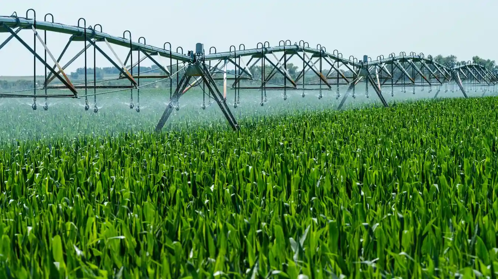

Featured StudyMapping Subsurface Soil Hydration Barriers via Drone Telemetry
A granular breakdown of how multi-spectral infrared passes highlight field water stress conditions weeks before visible crop markers emerge.
Read Case StudyStay updated with real-world agronomist case studies, predictive data mapping techniques, and precision hardware installation blueprints written by our engineering team.

Featured StudyA granular breakdown of how multi-spectral infrared passes highlight field water stress conditions weeks before visible crop markers emerge.
Read Case StudyFilter through our comprehensive index of data studies, soil evaluations, and tech deployment updates.
A tactical configuration breakdown of baseline nitrogen data parameters and hydration scales required to duplicate spring crops inside extreme winter conditions.
Read Full Guide Soil Science
Soil Science
Learn the precise step-by-step carbon-to-nitrogen ratios needed to reactivate micro-bacterial colonies, aerate clay density blocks, and eliminate overhead dependencies.
Read Full Guide Automation
Automation
How to link open-source webhook API controllers directly with electric automated field machinery and water valve hardware nodes to actuate crop irrigation workflows autonomously.
Read Full Guide IoT Tech
IoT Tech
A case study evaluating low-power long-range radio data frequencies across vast multi-regional acreage fields to secure offline caching streams.
Read Full Guide Soil Science
Soil Science
Discover how automated subsurface telemetry core points identify minor chemical pH shifts before micro-nutrients lock out crop roots entirely.
Read Full Guide Automation
Automation
A operational blueprint demonstrating how tracking real-time evapo-transpiration variables drops local irrigation system runtimes by 34%.
Read Full GuideReview the most shared publications and data optimization guides capturing the attention of our global agronomy and sensor engineering network this week.
 Top Trend
Top Trend
An operational handbook detailing the decentralized physical cloud infrastructure pipelines needed to secure telemetry feeds across large, multi-regional farm cooperatives without connectivity lags.
Read Research Paper
Deploy secure sensor clusters across your soil layouts in minutes. No complex programming or data engineering background required.

Isolate localized engineering publications by inputting field keywords or selecting standardized node category tokens below.


Field inquiries responded to within 1 hour globally.
Can't locate details regarding localized sensor clustering bounds or API tokens? Review these core deployment breakdowns.
Extremely straightforward. All Stackly telemetry spikes are engineered as self-contained, pre-calibrated ground instruments. Simply sink the carbon spike profile directly into target soil grids, actuate the master trigger key, and the device self-registers with your field cloud profile instantaneously.
Yes. Our active sensor node clusters establish regional peer-to-peer radio frequency meshes. If cellular connections drop, localized data points cache securely inside localized hardware memory cards, flushing data pipelines up to central cloud logs as soon as connection links restore.
Absolutely. The Acreage Pro and Enterprise packages grant comprehensive access to developer webhook endpoints. Our platform outputs unified payload signals designed to link natively with industrial automated solenoid water channels and electronic fertilizer grids without friction.

Deploy secure sensor clusters across your soil layouts in minutes. No data engineering background required.